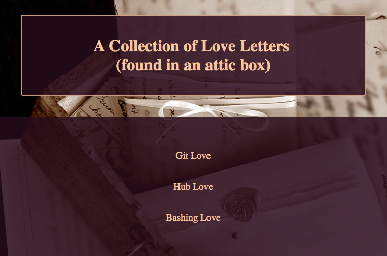
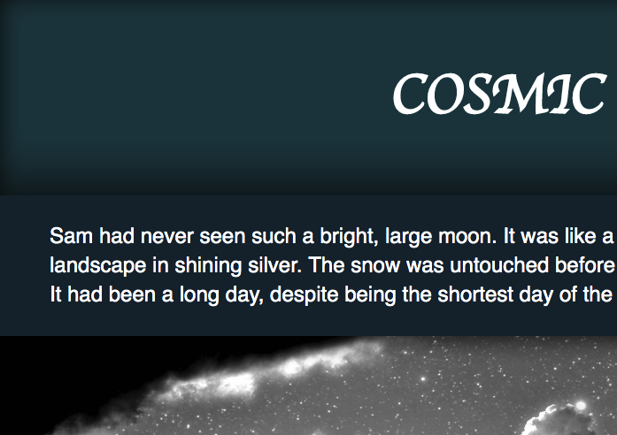
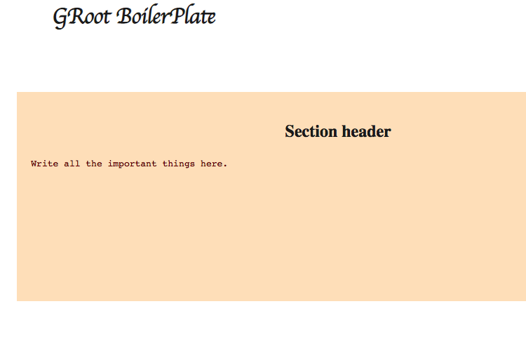
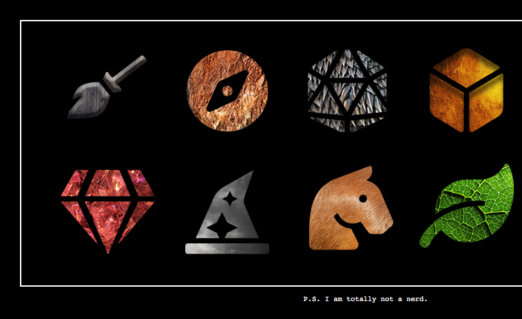
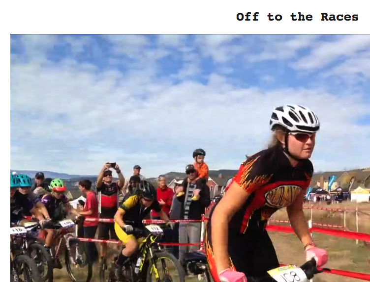
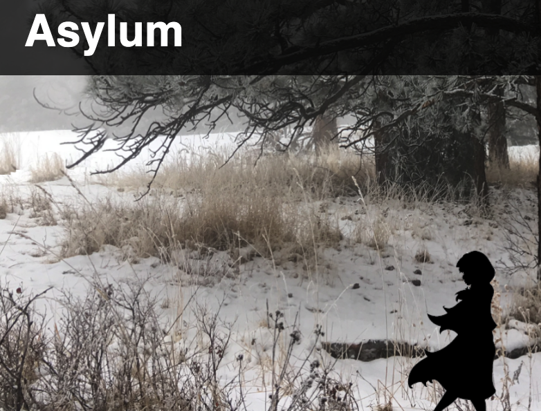
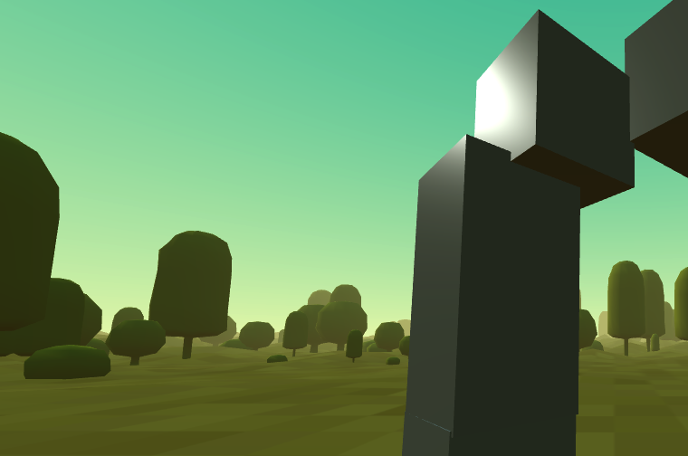
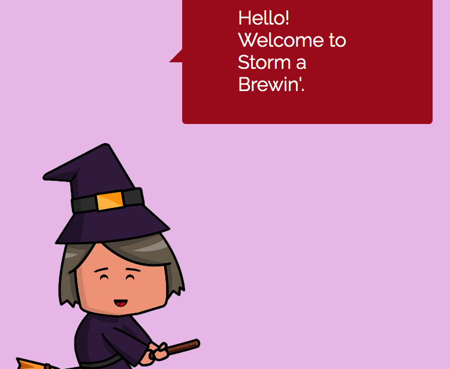

Dev Portal
Bash Bio

Exploring bash and keeping it simple. We used bash to create a personal html page with NO help from a code editor. Everything you see was done with bash from the terminal.
"Love" Letters 
Getting acquainted with Bash, Git, and GitHub. We used love letters as a format to provide very general instructions on how to complete simple tasks. Minimal CSS, no JS.
Exquisite Corpse 
Creating a story using GitHub and a team of five very different authors. I'd be willing to be this is the only Sci-fi, Horror, Romance Drama you have ever read.
Boilerplate 
Making life easier one website at a time. In this project, we custom make our own html boilerplate (pretty much just a template for a web page)
Spritesheet 
Look at the beautiful sparkly sprites! How fun. We created a sprite sheet using Noun Awesome and textures.
Animation 
An animation of a race start from back in the good old NICA days. If you watch it multiple times, you will a) get a really bad head ache and b) see me struggling to keep up. Hurrah!
Parallax Scrolling 
This is an experiment with parallax scolling using enirely CSS. We are also using this site to experiment with Google Analytics, so I can track how many times my mom visited it. Probably only once. It's not that cool.
Exploring A-Frame 
Using html code in the form of A-Frame to make a scene. Very exploratory, very basic. I attempt to build an arch, and it worked out slightly better than it would have in real life.
Storm a Brewin' AR Game 
Hold on to your hats, folks! There's a storm a'brewing. This is our project for the 2019 Atlas Expo. It is an AR game that revolves around helping a witch find ingredients to make a finals-passing potion.